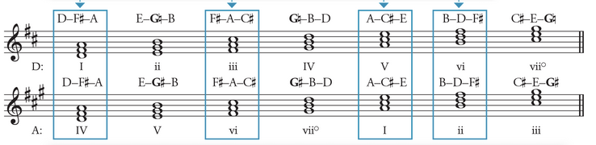
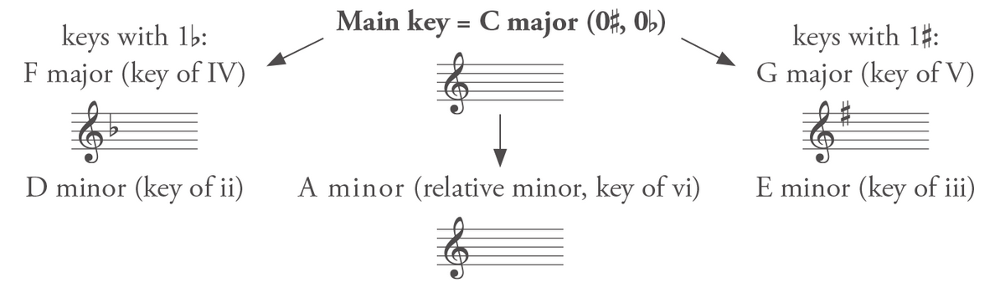
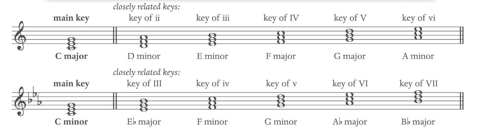
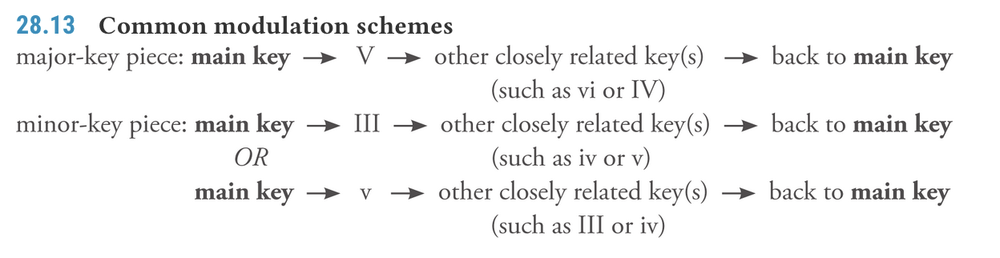

K_Modulation
Modulation Link to heading
Modulation: tends to be a key change that is long and substantial, involves a pivot chord and is confirmed with cadence. The harmonies and scales degrees are labelled in the new key.
Types of Modulation Link to heading
- Pivot modulation: shared chord as a transition
- Direct modulation: goes directly into the new key with no overlap
- Common-tone modulation: Uses single note as pivot point
- Chromatic modulation: modulate with chromatic chords
- Enharmonic modulation: Shared chord as a transition, but the
- pivot chord is enharmonically re-spelled in the new key.
Closely-related keys: keys that differs by no more than one sharp or flat from the home key.
Major IV - I - V ii - vi - iii
Minor VI - III - VII iv - i - v
Finding modulation Link to heading
- Looking for the accidental that comes back - change of accidental and change of emphasis.
- Check the tonic of the first chord
- I and V are the most occuring pivit chord
Pivot Chords Link to heading
The first chord in the new key is also in the main key. The shared harmony between two key is also known as a pivot chord. The pivot chord must be diatonic in both keys. (No accidental in either key), The note name must be the same. Look for the leading tone (the 7 that often with accidental), last chord that can no longer analyze in the old key.
It is best to have subdominant as a pivot chord.
When modulating involves a minor key, any chords within scales can be pivot chords as long as the notes are the same. even the uncommon key. e.g. IV in a minor == V of G
Modulation to the key of V Link to heading
| Key of I | Memo: 1451 & 3662 | Key of V |
|---|---|---|
| I | Becomes | IV |
| iii | Becomes | vi |
| V | Becomes | I |
| vi | Becomes | ii |

Harmonizing Melodies: Look for accidental shortly before the end of a phrase to identify melody key modulation OR succession of scale degrees compatible with a progression in a new key (e.g. B-A melody in C key, modulation to G would be more natural).
Reinterpreted half cadence: See cadence section
The V and vii chord usually needs accidental after modulation
vi^6^ may substitute I when used as pivot chord
Modulation to the relative key Link to heading
Closely Related Keys: Modulation can lead to any keys (not just V), The most common modulation is to those to the lonely related keys.
Modulation is labelled relative to its original main key; The scale includes all the closely related keys in a scale (except diminished):


Modulations in major-key pieces: Use the same rule as V modulation.
Modulation to minor key: it has a special exception for leading note. Remember to raise the leading note in the minor scale, even in the new key.
Extended Tonicizations Link to heading
Key changes that do not lead to a cadence are considered tonicizations. A single passage can involve multiple short passages with “key modulation”. They can involve a series of harmony before reaching the goal chords.
Modulation Schemes Link to heading
